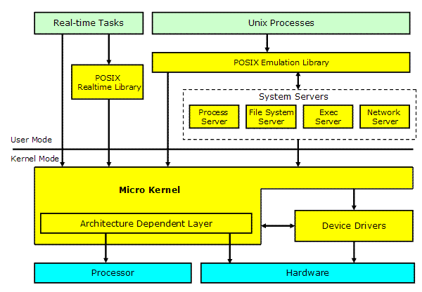
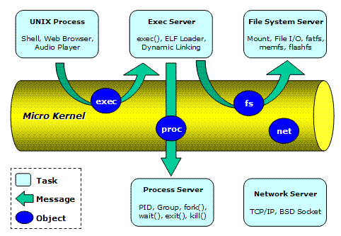
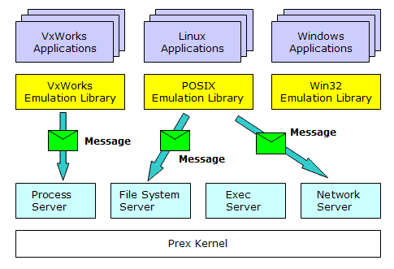

|
|||
| Prex Home > Document Index > Technology Overview | |||
Prex Technology OverviewVersion 1.2, 2008/08/27Table of Contents
Prex ComponentsThe following figure illustrates the Prex components. Figure 1. Prex Components The Prex microkernel provides only fundamental functions to abstract a processor and minimum hardware. In addition, it provides some real-time support functions for real-time tasks. The microkernel also provides kernel primitive services for device drivers. There exists a thin and well-defined interface layer called as "Architecture Dependent Layer" within a microkernel. The other basic OS functions like process, file system, networking etc., are provided by system server tasks. There is no characteristic difference between server tasks and normal tasks. The tasks will communicate with other task by using IPC message via a microkernel. Prex provides POSIX emulation libraries for application interoperability. It includes standard C library (libc) and a set of UNIX utilities. MicrokernelThe design policies for the Prex kernel are as follows:
Device DriversPrex device drivers work in kernel mode. All device drivers are stored in one single driver module, and this is separated from the kernel module. The driver module is dynamically linked with the kernel at boot time, and all device drivers are initialized at that time. The interface between the kernel and drivers are defined clearly as "Driver Kernel Interface (DKI)". The kernel provides the following services for device drivers.
Prex kernel maintains a name space for the device object which represents the physical, logical or virtual devices. A user mode application can access these device objects by using kernel APIs, and the request for the device object will be transferred to the associated device driver by the kernel. Each device driver may provide some of the following functions. Since it has very simple driver model, it's easy to develop new device driver for Prex.
Boot LoaderPrex provides the OS boot loader if it is required on the target platform. The boot loader will support the following minimum functions:
Since the boot mechanism depends on the hardware of each system,
its design is not strictly defined. System ServersThe Prex tasks can communicate with each other by sending message to the specific object, as illustrated below. Figure 2. Prex message passing Prex provides some standard server tasks to support generic OS functions that are removed from the kernel. The server tasks include:
A server task will create its object named like "fs", "proc", or "exec" in the kernel object name space. Each user mode task will send a message to these objects in order to use the server services. A server task can re-send the received message to another task. This mechanism can allow servers to "forward" the specific message to another server. For example, the proxy server will forward a received message to the remote proxy server via network. The file system server is designed as a multi-threaded server to give good performance. Currently, the following file systems are provided on top of the VFS subsystem in the fs server.
Emulation LibrariesPrex provides some libraries to emulate POSIX interfaces. They will include standard UNIX system calls, pthread, and real-time extension. The typical works of these libraries are to pack the application's request into a message, and send it to the appropriate server. It will encapsulate the message structure defined by each server task. For example, an application can use fork() system call as a library routine, which will automatically send the message to the process server. So, there is no need to modify the source code of the existing UNIX applications to run it on Prex. Figure 3. OS Emulation The emulation libraries can be made not only for POSIX but also for API of other OS. This allows Prex to support the execution of various different OS applications without changing the system servers. The developers will benefit from the source level compatibility of existing applications. User ApplicationsPrex supports two different application types - Real-time task and UNIX process. The real-time tasks will be loaded by the kernel at the boot time. And the UNIX processes will be loaded dynamically by the system servers after system boot. Prex provides a standard C library (libc) which is highly optimized for the memory constrained systems. In addition, Prex provides "CmdBox" which is a small binary that includes tiny versions of many UNIX utilities. |
|||
|
Copyright© 2005-2008 Kohsuke Ohtani |
|||